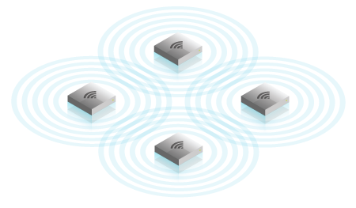

Мы строим беспроводные (Wi-Fi, WiMAX...) сети, как с нуля, так и в рамках усовершенствования и (или) масштабирования существующих беспроводных сетей масштабов квартир, офисов, торговых центров, населённых пунктов, дачных или коттеджных посёлков.

Наша компания специализируется на внедрении следующих видов беспроводных сетей:
-домашние и офисные Wi-Fi сети;
-hotspot - Wi-Fi сети в общественных местах;
-магистральные беспроводные мосты точка-точка, на расстояния до нескольких километров;
-магистральные сети точка-много точек на расстояния до нескольких километров;
-распределённые сети с бесшовным роумингом внутри зданий и (или) в масштабах микрорайонов и населённых пунктов;
-распределённые статические сети, для подключения к сети зданий посредством установки множества базовых станций по принципу сот.
Рассматриваем различные варианты сотрудничества, с операторами связи, юридическими и физическими лицами. Можем выступать агентами и (или) субпровайдерами, полноценно содержать сегменты сети, от построения, подключения до технической поддержки.
О нас
- Наша команда располагает штатом системных администраторов, инженеров и программистов с опытом работы не менее 5 лет, помощниками с опытом работы не менее 2-х лет. - Все системные администраторы, инженеры и программисты, перед включением в команду ЦИТРУС, проходят многоступенчатое двухмесячное тестирование на практике. - Для тестирования мы содержим собственную распределённую IT инфраструктуру масштабов Якутска. - Руководитель нашей службой IT аутсорсинга, по совместительству идейный вдохновитель и создатель компании, имеет образование в области информационной безопасности и подходит к обеспечению ИТ безопасности с точки зрения человеческого фактора в первую очередь. Во вторую очередь, но не менее тщательно, рассматривается безопасность программных и аппаратных средств IT инфраструктуры.
 Цитрус
Цитрус